未確定事項と判断してほしい点
ここだけが判断の依頼です。ほかの節は決定済みの情報です。AI で映像を生成する選択は、承認が必要です。この企画では生成していません。
- 1
- 2原稿にある、身近な人が呆れて、のちに同じ言い方をした話を入れるか。選択肢：A 出さない（基本。実在の人物を画面にも声にも出さない）／ B 続柄を出さず、声だけで「身近な人が、あとから同じ言い方をした」と入れる。キャラ設定
- 3見下ろしの 2D の由来として、作品名を声に出すか。選択肢：A 出さない。声も画面も「見下ろしの2Dマップ」（基本）／ B 声だけで作品名を言う。画面の文字、ロゴ、ゲーム画面は出さない。カット 05
- 4盤面の地を、ベタ塗りのままにするか、紙の質感を足すか。選択肢：A ベタ塗り（基本）／ B 明るい紙の地を、盤面が出るすべてのカットに同じ質感で足す。一部のカットだけ実写や生成動画にしない。生成動画は承認が必要。差し替え候補
この動画で伝える一文
北を「上」と言うのは、方角を知らない癖ではない。地図を回さず、北が上の盤面で自分のコマを動かす。筆者は、その頭の使い方を、わかる人に通じる共通言語として誇っている。
「北を上と言うのは、方角が分かっていない人の言い方だ」という思い込みに対して、地図を固定して自分を動かす感覚だと伝えます。ニッチでも、本人はそれを誇らしいと感じています。全員の空間認知が優れている、という話にはしません。
視聴者
地図を回して歩く人、北を上にしたまま見る人。どちらかに自分を重ねて、自分の頭の使い方を確かめたくなる人。ゲームの経験は条件にしません。
構成と尺
声は経緯と理由、文字は決め語、図は「盤面が回るか、コマが進むか」を運びます。説明の全文は画面に載せません。ナレーションありで尺を計算しています。この企画書は、API で音声を生成する許可ではありません。
| カット | 参考区間 | この区間で伝えること | 声／画面 |
|---|---|---|---|
| 01 地図、回してますか？ | 0:00–0:08（8秒） | 地図は回るのか、という続きを見る理由 | 48字／11字 |
| 02 上に行く。 | 0:08–0:16（8秒） | 北を上、東を右と言う本人の感覚 | 40字／31字 |
| 03 回る派、回らない派。 | 0:16–0:30（14秒） | 進行方向を上にする見方と、北を上に固定する見方 | 62字／22字 |
| 04 動くのは、自分。 | 0:30–0:44（14秒） | 筆者は地図を回さず、盤面でコマを進める | 45字／24字 |
| 05 上を押せば、北。 | 0:44–0:53（9秒） | 見下ろしの 2D で、その操作が染みたという本人の考え | 50字／18字 |
| 06 8割以上は、回す。 | 0:53–1:04（11秒） | 回す方が使いやすい、という調査。本人は少数派 | 70字／35字 |
| 07 上は、前。 | 1:04–1:13（9秒） | 回すと、上は方角ではなくなる | 44字／16字 |
| 08 江東区の、上。 | 1:13–1:25（12秒） | 頭の中の配置が、そのまま共通言語になる | 49字／28字 |
| 09 仮説です。 | 1:25–1:38（13秒） | 全員の話ではない。迷子のあとでも、固定した地図を呼び出す | 73字／39字 |
| 10 少し、誇らしい。 | 1:38–1:51（13秒） | わかる人にはわかる、という本人の結論 | 54字／24字 |
| 11 エンドロゴ | 1:51–1:56（5秒） | 制作表示 | 0字／0字 |
尺の計算：声 535 字 ÷ 約 7 字/秒 ≒ 76 秒。30 文の間（1 文あたり約 0.4 秒で約 12 秒）と、01 の寄り、03 の対比、04 の吸着を見る時間を足して本編 111 秒。ロゴ 5 秒で合計 116 秒（1 分 56 秒）。2 分は超えていません。字数は読了の目安です。等速で読む時間と、盤面を見る時間が足りるかは、制作側の試作で判断します。試作で伸びる場合は、08 の脇の地名と 09 の地下の一文から削ります。04 と 10 の主張は残します。
カット表・絵コンテ
1280×720、明るい背景の構図ラフです。番号と「はじめ／おわり」は、このページの見出しとキャプションにだけあります。画像の中には入れていません。絵コンテの文字は Noto Sans CJK JP です。秒数・角度・位置は参考値で、実装の手順は制作側が決めます。画面全体を大きく動かすこと、文字が読めること、留保を残すことは緩めません。
動きの軸は一つです。盤面を回すか、盤面は固定してコマを進めるか。北の辺は、固定した盤では画面の上に残り、回る盤では盤と一緒に画面の上から外れます。
地図、回してますか？
0:00–0:08 / 約 8 秒 ・ 導入の問い

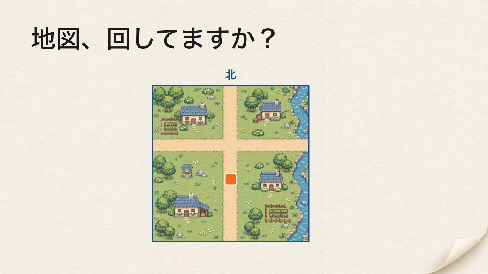

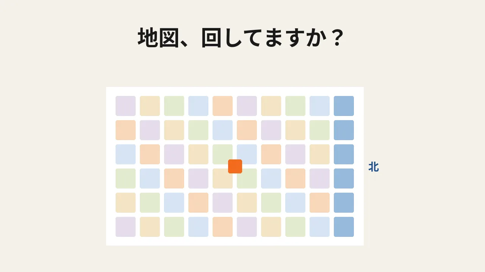
地図、回してますか？
地図を見るとき、北を上のままにしていますか。それとも、進行方向が上になるように、回していますか。
声 48 字／画面 11 字（盤面の「北」を含む）
「回してますか？」。主張そのものではなく、自分はどちらかと確かめたくなる問いです。
はじめもおわりも、問いが上、街が下の二段です。変わるのは街の向きです。北の列が上から右へ移るので、回ったことが一枚でも分かります。コマは橙のまま、向きを変えません。
街の層へ 寄り、そのあと街だけを 回す。コマと問いは回しません。読む間も街を少し寄せ続け、問いの行はマスクから入れます。字の形は崩しません。
回った街が引け、方位の語がばらけた盤面へ 押し出す。
ブロック街とコマはモーショングラフィックス。画像・動画ファイルは使いません。
A（基本）：いまの明るいブロック街。B：昼の真上ショット 5 秒。プロンプト案は 差し替え候補。未承認で、生成していません。夜の街にはしません。B を採っても、02 以降の盤面は同じ MG のままにします。01 だけ質感が変わるのは、場所を想起する導入で、図解の盤面とは役割が違うためです。
上に行く。
0:08–0:16 / 約 8 秒 ・ 主張の入口

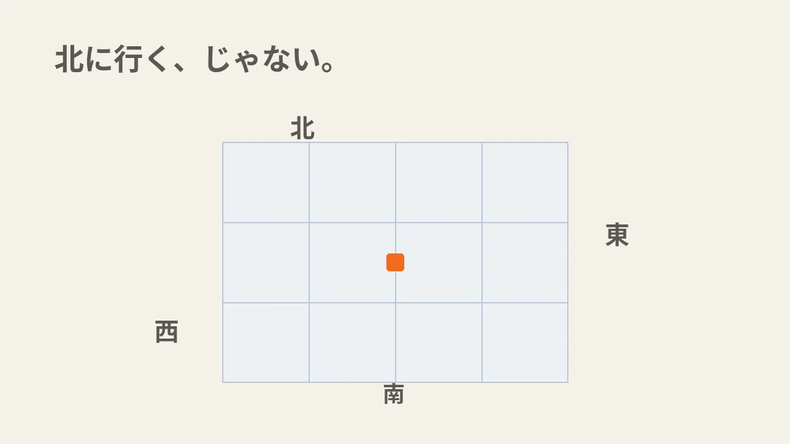

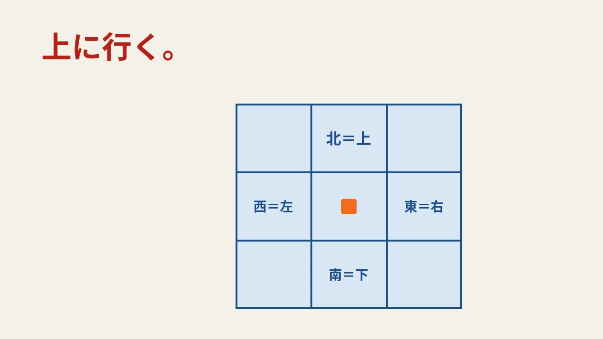
北に行く、じゃない。
上に行く。
北＝上 東＝右 南＝下 西＝左
私は、北に行く、ではなく、上に行く、と言ってしまいます。東は右。西は左。南は下。
声 40 字／画面 31 字
「上に行く。」。北を言い換えた本人の言葉なので、朱で着地させます。
回る派、回らない派。
0:16–0:30 / 約 14 秒 ・ 対比の見せ場

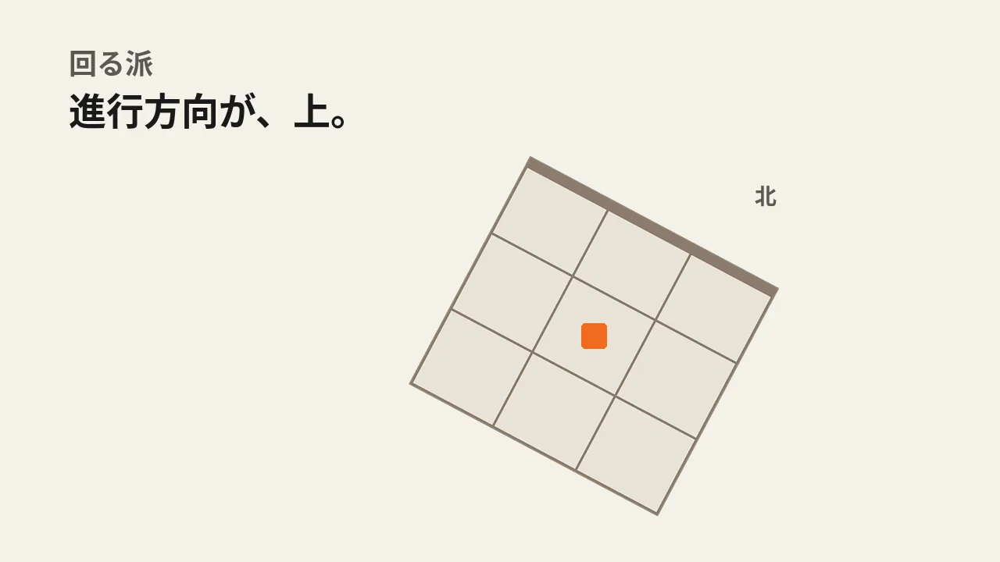

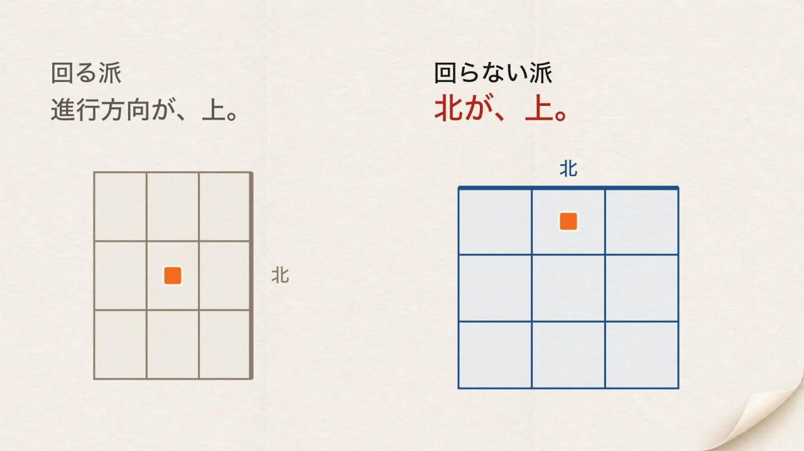
回る派
進行方向が、上。
回らない派
北が、上。
地図アプリには、進行方向を上にする回し方と、北を上に固定する見方があります。あなたの地図は、回る派ですか。回らない派ですか。
声 62 字／画面 22 字
「北が、上。」。回らない側の決め語だけ朱にします。回る側は灰のままです。
はじめは、左上の二行と、右下に傾いた一つの盤です。おわりは左右の二面です。左の盤は横長から縦長へ回り、北の太い辺が横に来ます。右の盤は正立のまま、コマが上のマスへ進みます。このカットの二つの橙は、同じ自分を二つの見方に置いたものです。色の意味は増やしません。
左の盤は 回し 続け、右の盤は固定してコマを 1 マス進めます。画面は左から右へ流れ、二面が並んだあとも左だけゆっくり回します。読む間を止めません。
右の固定盤が画面を埋めて、04 の主張になります。
二つの盤とコマ。追加の画像・動画は使いません。左右を上下に積み替えるのは、制作側が二面の対比を保てる範囲で判断してよいです。
紙の地を足すなら、左右の盤と 02・04 以降も同じ質感にします。回る側だけ実写や生成動画にはしません。
動くのは、自分。
0:30–0:44 / 約 14 秒 ・ 主張の見せ場

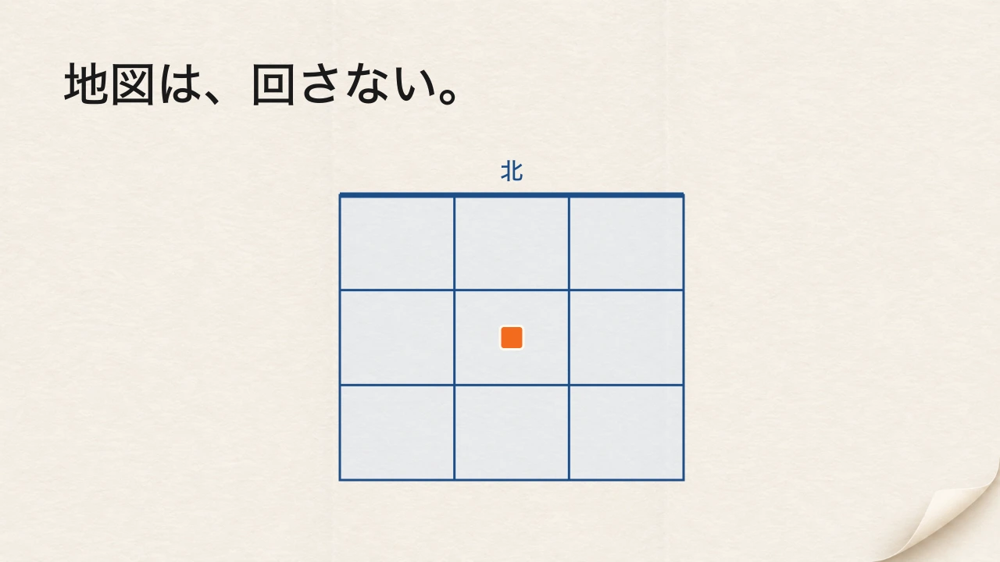

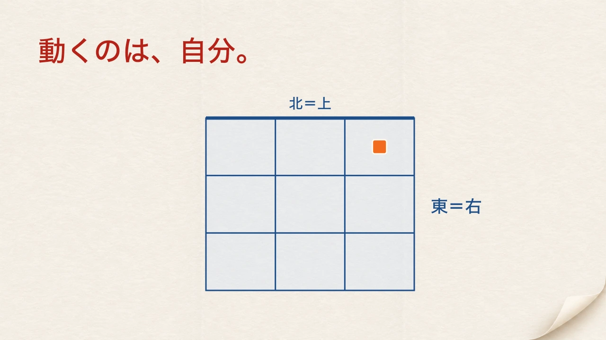
地図は、回さない。
動くのは、自分。
北＝上 東＝右
多くの人は、頭の中で地図を回します。私は回しません。北が上の盤面で、自分のコマを進めます。
声 45 字／画面 24 字
「動くのは、自分。」。地図を回さない、の次に、何が動くかを置きます。
見出しは左上の一行のまま、盤が中央から右へ大きくなります。03 の二面から、固定盤だけの一面へ重心が移ります。等式は盤の上と右に付き、マスの中には入れません。
盤は回しません。コマが上に 1 マス、右に 1 マス、吸着 しながら進みます。「北＝上」「東＝右」はその拍で軸に付きます。「動くのは、自分。」は塊で 着地 します。カメラはコマに沿って寄ります。three.js は、この固定盤とコマの高さを同じ空間で扱うために使います。
盤を右へ残し、左から操作の十字が入って 05 になります。
盤、コマ、文字。追加の画像・動画は使いません。
コマを少し浮かせるのは、three.js の範囲で制作側が判断します。新しい画像は要りません。紙の地を足すなら全盤面カットで揃えます。
上を押せば、北。 要判断 3
0:44–0:53 / 約 9 秒 ・ 根拠

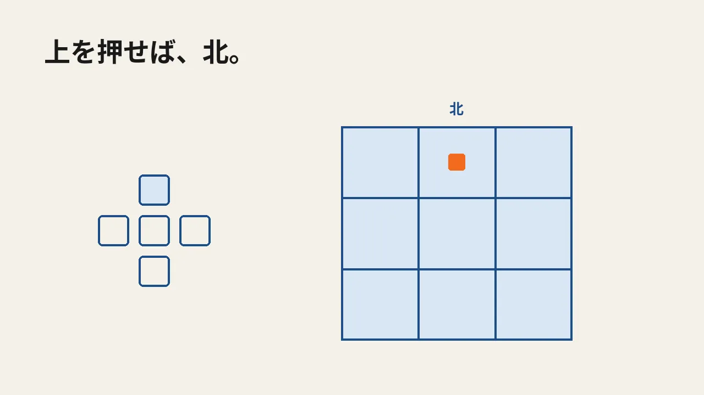

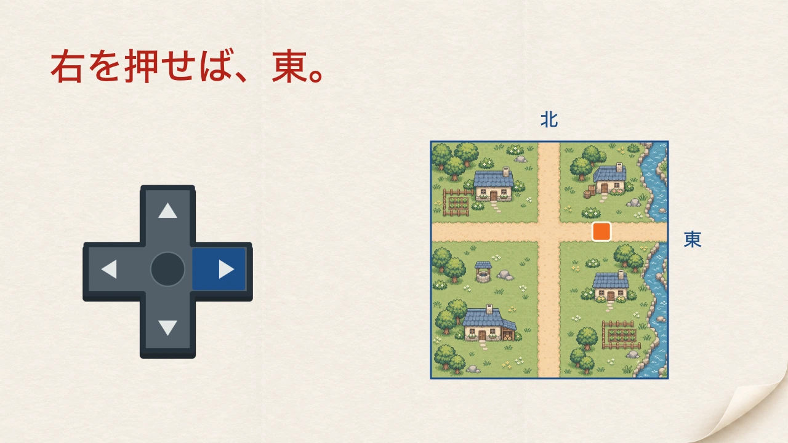
上を押せば、北。
右を押せば、東。
由来は、十中八九、見下ろしの2Dマップです。上を押せば北、右を押せば東。その感覚が染みついています。
声 50 字／画面 18 字
「上を押せば、北。」。由来は本人の考えなので、声の「十中八九」を落とさないでください。
左に操作の十字、右に固定盤です。04 の盤だけの画面から、左右の非対称になります。十字の押された面は青で、橙にはしません。橙はコマだけです。
盤は固定です。上のボタンが満ち、コマが北へ 1 マス。続いて右のボタンが満ち、コマが東へ 1 マス。ボタンとコマは同じ拍で動きます。読む間は十字ごと左へ少し流します。
十字が引け、大きな「8割以上」が左から入って 06 になります。
自作の十字と盤。実在の機器、ゲームの画面、ロゴは使いません。
基本は、声も画面も「見下ろしの2Dマップ」です。作品名を声だけに出す選択は要判断 3。画面の文字にはしません。十字をキーボードの四つのキーに描き替えるのは、特定製品の形にしない範囲で制作側が判断してよいです。
8割以上は、回す。
0:53–1:04 / 約 11 秒 ・ 留保

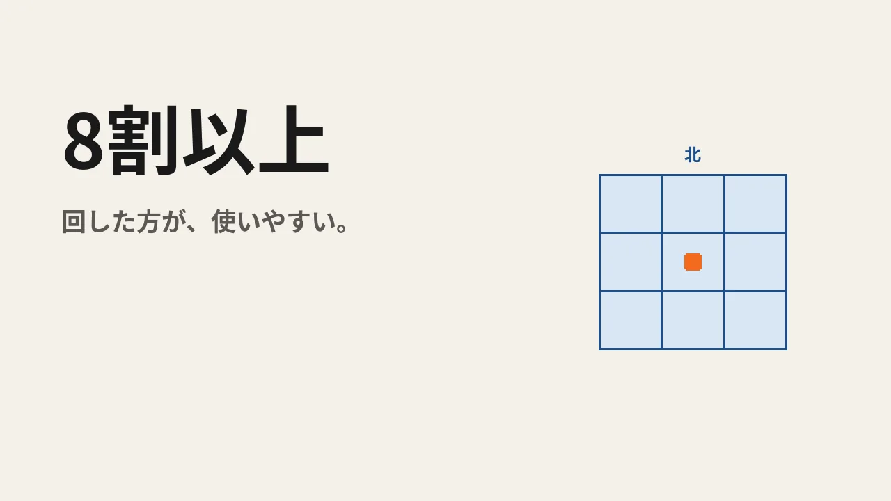

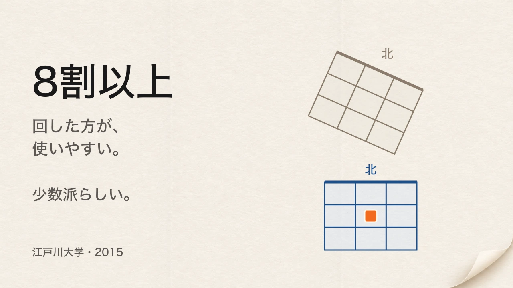
8割以上
回した方が、使いやすい。
少数派らしい。
江戸川大学・2015
2015年の江戸川大学の調査では、大学生の8割以上が、地図を自分の進行方向に回した方が使いやすい、と答えています。私の感覚は、少数派らしい。
声 70 字／画面 35 字（二つの盤の「北」を含む）
「8割以上」。原稿の言い方のままです。80% や、より細かい率にはしません。出典は画面に残します。
左に大きな数字、右に盤、という左右です。おわりで、傾いた盤（多数派）と、下の小さな正立の盤（自分）が分かれます。橙のコマは固定盤にだけいます。傾いた盤に橙を置いて、自分も回しているように見せないでください。
「8割以上」は塊で 着地 します。右の盤はそこから 回し、コマは回る盤から離れて、下の固定盤へ移ります。出典は後から行マスクで入れ、数字より小さくしますが、安全域の中で読める大きさにします。
傾いた盤が残り、07 で「上」が「前」に入れ替わります。
文字と二つの盤。調査の紙面やグラフは使いません。
棒グラフや、桁が回る数字にはしません。出典を声だけにして画面から消すこともありません。紙の地は 要判断 4 で、足すなら全盤面です。
上は、前。
1:04–1:13 / 約 9 秒 ・ 根拠

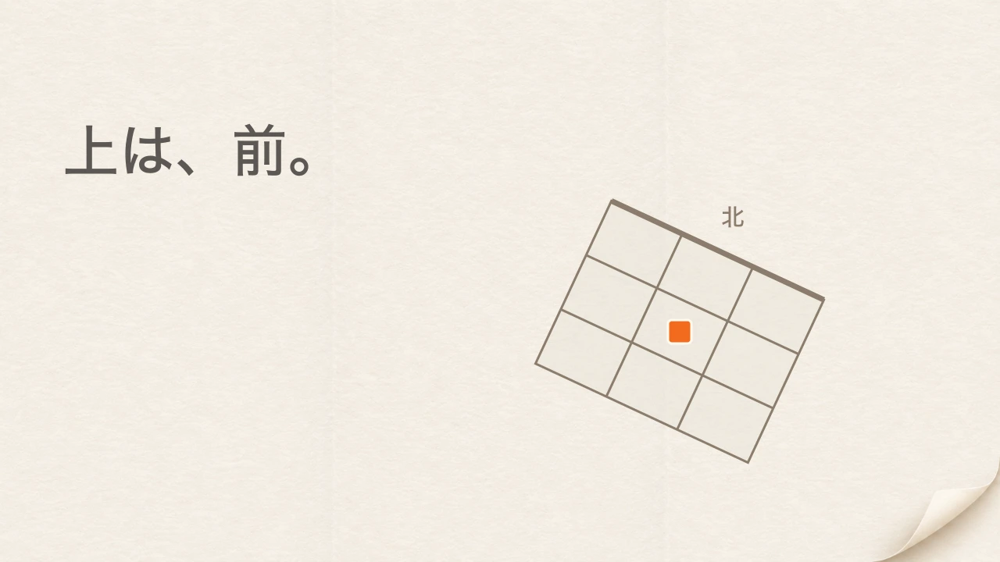

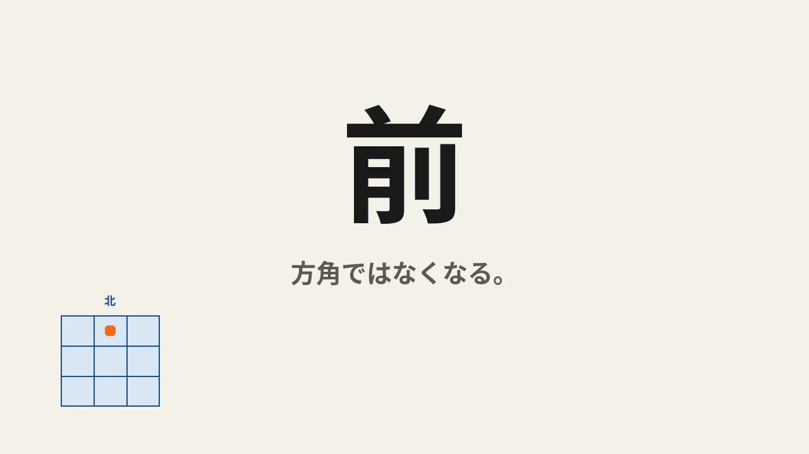
上は、前。
方角ではなくなる。
地図が進行方向に合わせて回っていたら、上はただの前です。方角としての北ではなくなります。
声 44 字／画面 16 字
「前」。回した地図の「上」が、方角ではなく向きになる、という一点です。
はじめは左の見出しと右の傾いた盤です。おわりは、中央の一文字「前」と、その下の一行、左下の小さな固定盤です。後半で構図を、盤から巨大な一語へ移します。
盤が回り切り、北が画面の外方向へ流れます。「前」は塊で 着地 します。左下の固定盤は回さず、コマを北へ 1 マス進めます。読む間は「前」の行ごと少し寄ります。字の形は崩しません。
「前」が上へ抜け、縦に積んだ二つの区のブロックへ 押し出す。
文字と盤。矢印の記号は、ここではまだ出しません。矢印は 09 の自分視点だけです。
「前」の字の中に映像を入れる案は採りません。紙の地は要判断 4 で全盤面共通です。
江東区の、上。
1:13–1:25 / 約 12 秒 ・ 根拠

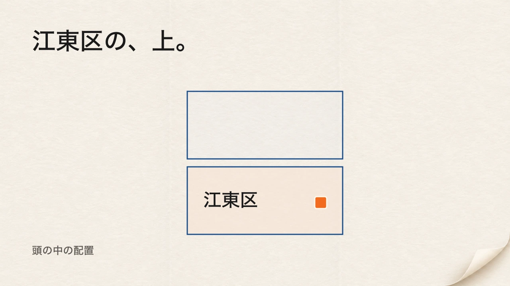

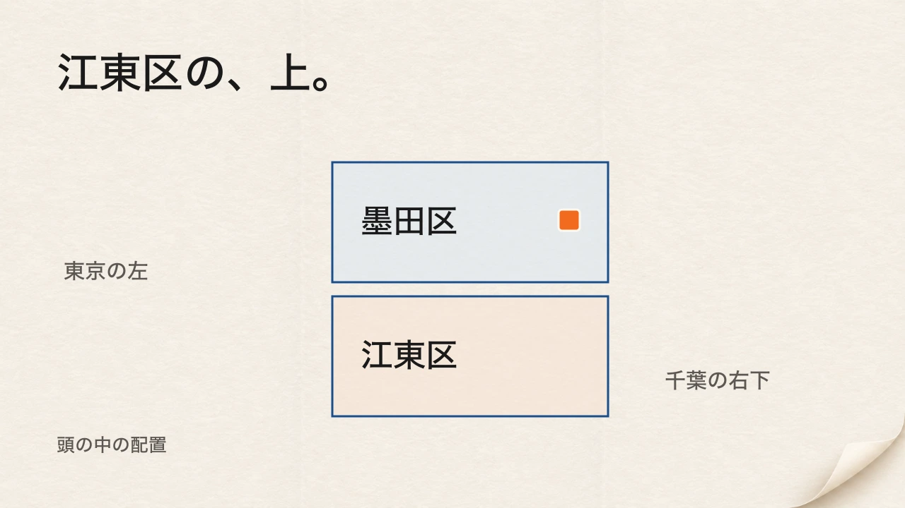
江東区の、上。
墨田区
千葉の右下
東京の左
頭の中の配置
頭の中では、江東区の上が墨田区です。千葉の右下。東京の左。わかる人には、説明しなくても伝わります。
声 49 字／画面 28 字
「墨田区」。江東区の上、という配置そのものが言葉です。「頭の中の配置」を添えて、実在の地図の正確な形ではないと分かるようにします。
このカットだけ、縦に二つのブロックを積みます。左に「東京の左」、右下に「千葉の右下」で、横の広がりも残します。区の色は、コマの橙とも、回る盤の灰とも別にします。
空の上枠に墨田区の面が上から 吸着 し、コマが江東区から墨田区へ 1 マス進みます。脇の二語は左右から逆向きに入ります。盤は回しません。
二つのブロックが奥へ小さくなり、手前に「前」の矢印が立つ 09 になります。
二つのブロックと文字。東京の地図、航空写真、地図アプリの画面は使いません。
実在の区界を描いた地図や、生成した街の俯瞰にはしません。ブロックの色を入れ替えるのは、橙のコマと混ざらない範囲で制作側が判断してよいです。
仮説です。
1:25–1:38 / 約 13 秒 ・ 留保

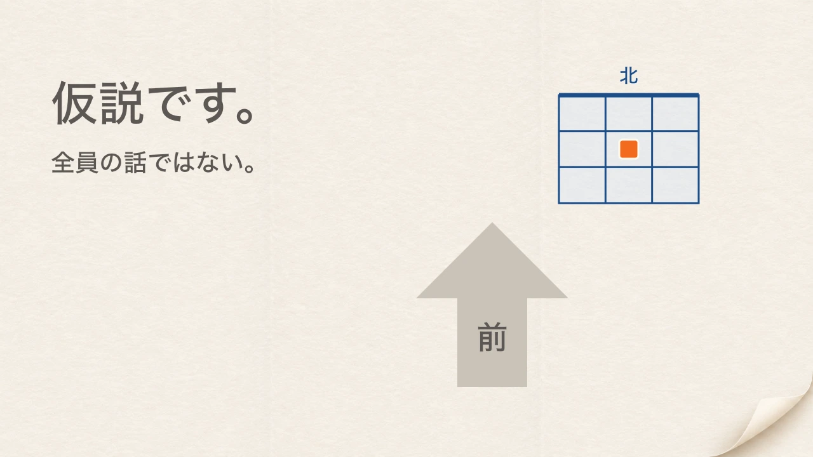

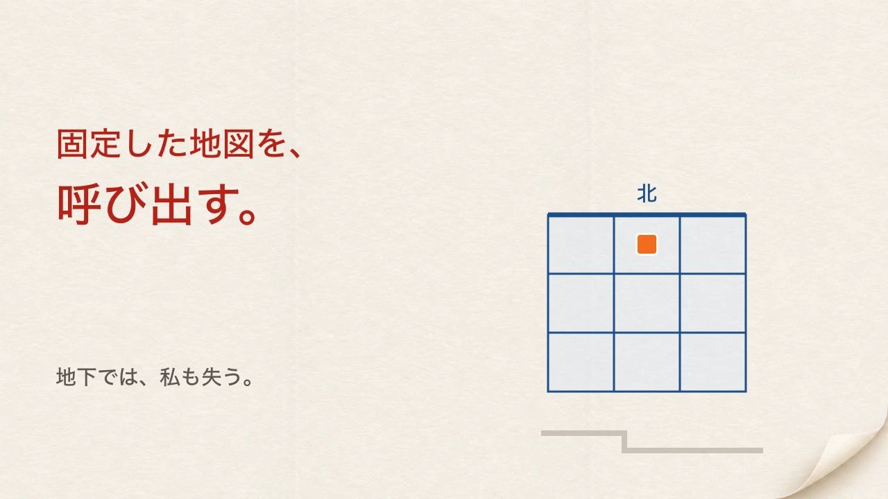
仮説です。
全員の話ではない。
固定した地図を、呼び出す。
地下では、私も失う。
これは私の仮説です。矢印が出る地図に慣れた人には、伝わりにくいかもしれません。地下では、私も方向を失います。それでも、固定した地図を呼び出します。
声 73 字／画面 39 字
「呼び出す。」。留保のあと、本人のやり方に戻る語です。灰の「仮説です。」を先に読ませ、朱は戻った側に使います。
はじめは、左の留保、右奥の小さな盤、手前の大きな矢印、という奥行きです。おわりは矢印がなくなり、左の二行と右の大きな固定盤です。後半も、手前と奥を入れ替えます。地下は夜の絵にせず、紙色の上の明るい折れ線にします。
盤が奥へ引き、矢印が手前に 着地 します。そのあと矢印が退き、盤が手前へ戻ってコマが北へ 1 マス進みます。留保の間も、盤か矢印かが動いています。世代の名前や「DNA」は出しません。
戻った固定盤を残し、左の文字が結論の二行へ 押し出す。
矢印、盤、折れ線は図形です。夜の街、地下街の写真、スマホをかざす手元の動画は使いません。
矢印を大きくする、折れ線を盤の後ろに回す、は制作側が判断してよいです。写真や生成動画で地下や街を足す案は採りません。暗い画面にはしません。
少し、誇らしい。
1:38–1:51 / 約 13 秒 ・ 本人の結論

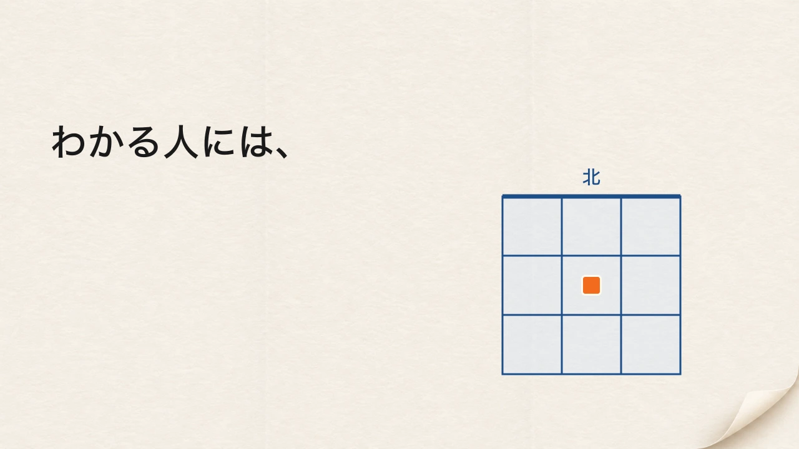

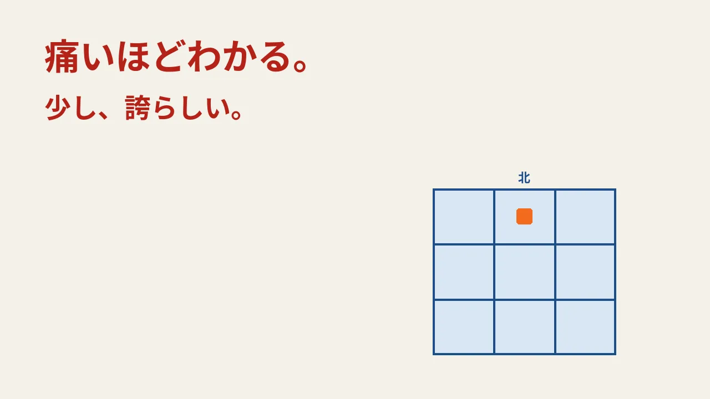
わかる人には、
痛いほどわかる。
少し、誇らしい。
わかる人には、痛いほどわかる。この共通言語を持っていることが、少し誇らしい。私は、この言い方を使い続けます。
声 54 字／画面 24 字
「少し、誇らしい。」。視聴者への問いでは閉じません。本人の言葉で閉じます。
エンドロゴ
1:51–1:56 / 約 5 秒 ・ 制作表示

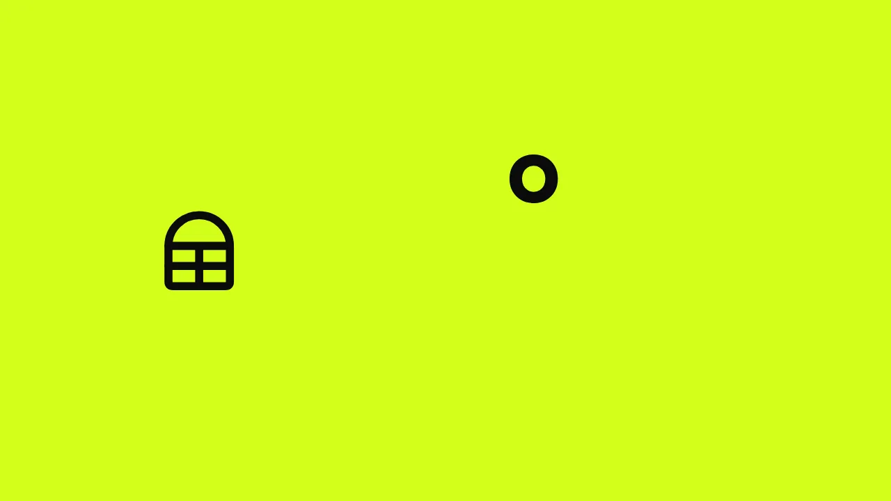

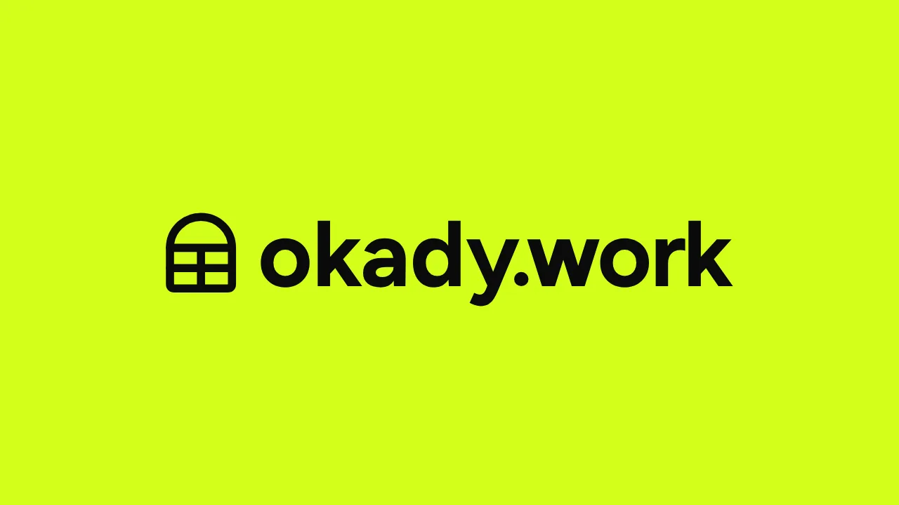
なし。ロゴ以外を重ねません。
なし
声 0 字／画面 0 字
ロゴだけです。形、書体、色、比率は変えません。ファイルはリポジトリ直下の ../okady-work-logo.svg です。
ライムの全面の中央に、引き伸ばさないロゴです。本編の文字も盤も残しません。
10 からのつなぎは勢いがあってよいです。ロゴ自体は、0〜2.6 秒で o が落ちてバウンドし定位置へ、2.6〜3.2 秒で全体が左へスライド、3.0〜4.0 秒で「.work」が一文字ずつ出ます。そのあと完成形を約 1 秒保持します。SVG を画像のまま置くだけではフレームと同期しないので、同じタイミングをフレーム時刻から再現します。
ここで終わります。BGM もロゴの終わりに合わせて収めます。
../okady-work-logo.svg だけです。
ありません。章表示、テロップ帯、エンドクレジットは入れません。
詳細（ここから下は補足）
ここまでで、どんな動画で、どう組み、どう見えるかを示しました。以下は分担、デザイン、動きの名前、素材、音、根拠、完成条件です。
声・文字・素材の分担
| 担当 | 受け持つこと | 受け持たないこと |
|---|---|---|
| 声 | 経緯、調査の文、由来が本人の考えであること、仮説であること、結論の文。 | 画面の語の読み上げそのもの。全文字幕。 |
| 文字 | 問い、決め語、等式、留保の短い句、出典、区の名前。 | ナレーションの全文。原稿にない数字。 |
| 図（盤・コマ・十字・矢印・ブロック） | 回る見方と、固定した盤でコマが進む見方。北が画面の上に残るか。 | 説明の文。特定のゲームや地図アプリの画面。 |
| 画像・動画ファイル | 基本は使わない。冒頭の生成動画は要判断 1 で、未承認。 | 夜の街。実在の地図。人物。 |
声ありで文量と尺を組んでいます。画面に声の全文は足しません。ナレーションの有無を変えると、画面の文量と尺を組み直す必要があります。
主張・根拠・留保の対応
| 役割 | 内容 | カット |
|---|---|---|
| 主張 | 北を上と言うのは、地図を回さず、北が上の盤面で自分のコマを動かす頭の使い方だ。 | 02、04、10 |
| 根拠 | 見下ろしの 2D で上は北、右は東だった、という本人の考え。回すと上は前になる。頭の中では江東区の上が墨田区。 | 05、07、08 |
| 留保 | 2015 年の江戸川大学の調査では、大学生の 8 割以上が回した方が使いやすいと答え、本人は少数派らしい。これは仮説で、全員の話ではない。地下では本人も方向を失う。 | 06、09。声と文字の両方に残す |
| 最後に残す本人の結論 | わかる人には痛いほどわかる。この共通言語を持っていることが、少し誇らしい。この言い方を使い続ける。 | 10 |
冒頭の問いは 01、主張の核は 04「動くのは、自分。」、結びは 10「少し、誇らしい。」です。この三つを続けて読んでも、同じ主張に着きます。原稿との文言の対応は references.md にあります。
企画側／制作側
| 企画側が渡すもの | 制作側が判断・制作するもの |
|---|---|
| 主張の一文、構成と尺、画面の文言、ナレーション案、絵コンテ 22 枚、字組みと色、動きの狙い、効果の採否（effects-direction.md）、ロゴへの参照、根拠の対応 | three.js と DOM の文字層による実装、動きの細かな値、BGM と効果音、書き出し |
| 画像・動画の採用ファイルはなし。冒頭の生成動画は未承認で、生成していない | 不足する画像・動画が出たら、作らずに企画側へ返す |
| 絵コンテ上の文字について、安全域と、文字どうし・文字とコマの重なりを検査済み（下記の完成条件） | 本編の機械検査。全カットを約 0.25 秒ごとに、文字の外接矩形が安全域の外へ出ていないか、図と重なっていないかを見る |
| ナレーションの原稿と、声は経緯・文字は決め語という分担 | 声の選定と生成。明示の依頼と、使える API キーがあるときだけ。この企画書は生成の許可ではない |
音源ファイルがまだないことは、制作を始めない理由にしません。会話を知らない制作者が、この plan.html と絵コンテと ../okady-work-logo.svg だけで着手できる状態にしています。
デザインシステム（映像の文字・色・グリッド）
これは本編の見た目です。この企画書のページの色（青と橙の注意色）とは別です。本編でライムは、エンドロゴの背景だけに使います。
| 名前 | 値 | 使い道 |
|---|---|---|
| 紙 | #f4f1ea | 画面の地。暗い全面にはしない |
| 墨 | #1a1a1a | 主文。問い、操作、区の名前 |
| 朱 | #b42318 | 筆者の決め語。上に行く、動くのは自分、北が上、呼び出す、誇らしい |
| 灰 | #5c5854 | 留保と、多数派・回る側の文字 |
| 青 | #1d4e89 | 固定盤の線。北のラベル |
| 青の面 | #d9e6f5 | 固定盤のマス。墨田区のブロック |
| 暖灰 | #e8e2d6 | 回る盤の面 |
| 北の辺 | #8a7c6c | 回る盤の、北だった辺。太くする |
| 橙 | #f26b1d | 自分のコマだけ |
| 江東の面 | #f6e3d4 | 江東区のブロック。橙とは別 |
| ライム | #d2ff1a | エンドロゴの背景だけ |
文字は DOM（または同等の層）で、詰め組と行のマスクが効く組み方にします。盤・コマ・カメラは three.js の層です。カメラの寄りと回転は盤の層に掛け、文字が盤に埋もれたり、画面の端で欠けたりしないようにします。本編の安全域の目安は、1920×1080 で左右 80px、上下 64px です。
字組みはカットごとに変えます。
- 01 は上の問いと、下の街。
- 02 は左上の決め語と、右の 3×3。
- 03 は左右の二面。このカットだけです。
- 04 は盤が画面を占める一面。
- 05 は左の十字と右の盤。
- 06 は左の巨大な数字と、右から下へ分かれる二つの盤。
- 07 は中央の一文字「前」。
- 08 は縦に積んだ二つの区。
- 09 は手前の矢印と、奥の小さな盤。おわりで逆転します。
- 10 は左の二行と、右の盤。コマが北へ進みます。
- 11 はライムの中央にロゴだけ。
動きの言語
名前は狙いの共有です。秒数とイージングの式は固定しません。読む間は、行、語の塊、盤、画面（カメラ）を動かします。文字の形そのものは崩しません。1 字ずつの揺れ、拍ごとの脈動、意味のない粒子では「動いている」にしません。
| 名前 | 狙い |
|---|---|
| 吸着 | 語やコマが、盤の交点・マス・北の辺へ吸い付く。この作品の軸の、固定側の動き。 |
| 回す | 盤面だけが回る。コマと文字は回さない。北の辺が画面の上から外れる。回る側の動き。 |
| 着地 | 決め語の塊が大きく出て、水平に収まる。収まったあとも、盤かカメラは動かし続ける。 |
| 寄り | 読む間の、盤や行ごとのゆっくりした移動。止めないための動き。 |
| 押し出す | 次のカットへ、盤か語を勢いのまま渡す。場面の境で止めない。 |
three.js を使います。回る盤と、固定盤の上のコマを、同じカメラで寄ったり回したりするためです。文字はテクスチャにせず、DOM の層に置きます。Remotion で組むときは、位置・回転・スケールをフレーム時刻から決めて、同じ状態を再現します。
効果の採否は effects-direction.md にあります。採用するのは、層の速度差、語の塊の着地、北の辺が描かれること、の三つです。見本の暗い背景、章題、1 字の揺れは使いません。
記号と色
一つの記号に一つの意味があるかを、全カットで点検しています。
| 記号 | 意味 | 出るカット | 混ぜないこと |
|---|---|---|---|
| 橙の角丸 | 自分のコマ（現在地） | 01〜10。03 は同じ自分を二つの見方に並べる | 多数派の印、ボタン、区の面 |
| 青の正立の盤 | 北が上で固定された地図 | 02、03 右、04、05、06 の小さな盤、07 左下、08 の積み方、09 おわり、10 | 回る盤と同じ色にしない |
| 暖灰で傾く盤と、太い北の辺 | 進行方向が上になる地図。北は画面の上から外れる | 01 のおわり（街の北列）、03 左、06 の大きな盤、07 はじめ | 固定盤。自分のコマをこの上に残さない（03 の対比を除く） |
| 「北」の字 | その盤における北 | 盤があるカット | ナレーションの印、ロゴ |
| 朱の文字 | 筆者の決め語 | 02、03 右、04、09 おわり、10 | 留保、出典、多数派 |
| 灰の文字 | 留保、または回る側の説明 | 02 はじめ、03 左、06、07、09 はじめ | 決め語 |
| 十字のボタン | 見下ろしの操作。上で北、右で東 | 05 だけ | 特定の機器やゲームのボタン |
| 上向きの矢印と「前」 | 自分が見ている向き。方角の北ではない | 矢印は 09 はじめだけ。「前」の字は 07 と 09 | 北の印。07 では矢印を出さず、字だけで示す |
| 上下のブロック | 頭の中の配置にある場所 | 08 だけ | 実在の地図の形。コマの橙 |
| 明るい折れ線 | 地下で方向を失うことの示唆 | 09 おわりだけ | 夜の街、道の正確な形 |
| ライムの全面 | 制作表示 | 11 だけ | 本編の強調色 |
キャラ設定
人物は出しません。自分は橙のコマです。顔、体、家族の絵は置きません。要判断 2
原稿にある、身近な人が呆れて、のちに同じ言い方をした話は、基本では入れません。実在の人物だからです。入れる場合は、続柄を出さず、声の一文だけにします。絵は足しません。
差し替え候補
基本は、各カットのモーショングラフィックスです。下の候補を採るかは 冒頭の判断 です。AI の映像は未承認で、生成していません。
| 候補 | 内容 | 採らないときの形 |
|---|---|---|
| 要判断 1 冒頭 5 秒 | 昼の真上ショット。プロンプト案：「Top-down view of a bright daytime city made of simple pastel blocks, soft daylight, no people, no text, no logos, no recognizable real-world map. The camera slowly dolly-ins from high altitude, then the whole map rotates 90 degrees while a single orange dot stays fixed at the center.」5 秒、1 本。承認が必要。 | カット 01 のブロック街。夜の発光する街にはしない |
| 要判断 4 紙の地 | 明るい紙の質感を、盤面が出るすべてのカットに同じように敷く。作画で、生成動画ではない。 | ベタ塗りの盤 |
| 05 の十字 | 四つのキーのような四角に描き替える。特定製品の形にはしない。 | いまの十字 |
| 08 の色 | 二つの区の面の色を入れ替える。橙にはしない。 | 上を青の面、下を薄い桃 |
盤面そのものを、一部のカットだけ実写や生成動画にする候補は挙げていません。01 の街だけ役割が違います。導入で場所を想起し、02 以降は図解の盤面です。
素材
| ファイル | 用途 | 区間 |
|---|---|---|
assets/storyboard/cut-01-start.webp から cut-11-end.webp までの 22 枚 | 構図のラフ。完成映像ではない | 各カットのはじめ／おわり |
../okady-work-logo.svg | エンドロゴ。形・色・比率は変えない | 11（1:51–1:56） |
採用する写真・動画ファイルはありません。生成動画は未承認、未生成です。フォントファイルは同梱していません。絵コンテは Noto Sans CJK JP で描きました。
音
BGM と効果音は後回しです。音源は同梱していません。制作側が、次の条件で作ります。過去の企画の曲は使いません。20261007 の音源も使いません。
- トーンは、盤の上を正確に進む軽さです。感傷や、暗い環境音にはしません。
- 拍が立ちます。吸着と 90° の回転が拍に載ります。目安は 108〜120 BPM です。遅い曲に合わせて映像を遅くしません。
- 01 で入り、03 と 04 で層を足します。09 の留保は一段下げますが、拍は残します。10 で戻り、ロゴの終わり（約 1:56）で収めます。映像より短い音源を、余裕があるとは書きません。
- 無音は、「私は回しません」の頭で半拍だけ抜いてよい、という程度です。それ以外は無音にしません。
- 効果音を足すなら、マスに吸着する短いクリックです。特定のゲームの音は使いません。効果音も後回しです。
- ナレーションは、各カットの原稿を使います。画面の全文を字幕にしません。声の生成は、明示の依頼と、使える API キーがあるときだけです。有料の音楽生成を比べる場合は、品質・時間・費用の理由を一行残して選びます。料金が未確認の有料生成はしません。
根拠
原稿の抜粋、画面文言、出典、画面にしない情報は references.md にまとめています。調査の数字は、原稿の「大学生の8割以上」だけを使い、画面に「江戸川大学・2015」と出します。PDF は開いておらず、原稿にない率や人数は足していません。
完成条件・確認状態
- 等速での通し確認は未確認です。本編は未制作です。静止画の絵コンテは、躍動感の合格ではありません。
- BGM・効果音は後回しです。ナレーションも未制作です。
- 絵コンテ 22 枚について、文字の外接矩形が安全域（1280×720 で左右 64px、上下 48px）の中にあること、文字どうしが 6px 以内で重ならないこと、文字と橙のコマが重ならないことを検査しました。不合格は 0 でした。盤の線は検査の対象外なので、線に乗ったラベルは目で動かして外しました。
- 章表示、テロップ帯、エンドクレジットは入れません。最後はライムの上のロゴだけです。
- 制作側は、代表の一区間（03 の対比か、04 の吸着）を等速で確かめてから全編へ広げます。本編では、約 0.25 秒ごとの文字の外接矩形で、はみ出しと、盤・矢印・コマとの重なりを検査します。
- 要判断 1〜4 が未回答でも、基本案（MG、人物なし、作品名なし、ベタ塗り）で実装を始められます。生成動画を選ぶ場合は、その時点で承認が必要です。